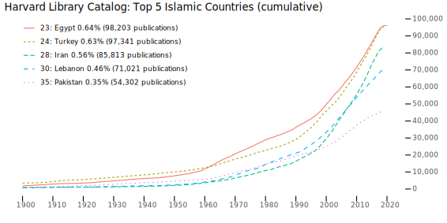
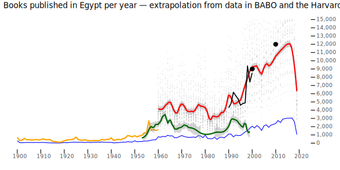

background-image: url(./images/bg_default_2021.png) background-size: contain class: center, middle “THE MEDIEVAL ISLAMIC WEST IN THE LIGHT OF EASTERN ARABIC HISTORIOGRAPHY” # One source to rule them all: constructing the master chronicle for Islamic history ⥈ **Maxim Romanov** *Universitätsassistent*, Institut für Geschichte, Universität Wien<br> *Senior Reseach Fellow*, KITAB Project, Aga Khan University (London) ⥈ 11 June 2021 --- background-image: url(./images/bg_default_2021.png) background-size: contain class: center, middle # General Plan ⥈ ### 1. The Size of the Arabic Written Tradition ### 2. Arabic Biographical Collections and Chronicles ### 3. MasterChronicle Concept ### 4. Vannevar Bush’ *Analytical Machine* ⥈ --- class: middle exclude: false ## 1. The Size of the Arabic Written Tradition 1. A Bibliographical Collection 2. Library Catalogs 3. OpenITI Corpus --- class: middle, center exclude: false ## 1. Bibliographical Collection: *Hadiyyaŧ al-ʿārifīn* ### Ismāʿīl Bāšā al-Baġdādī (d. 1339/1920) and his<br> *Hadiyyaŧ al-ʿārifīn* (“The Gift to the Knowledgeable”) • **Lists:** • ~8,800 authors • ~40,000 titles • --- ### 1. The *Hadiyyaŧ al-ʿārifīn*: Books *&* Authors <img src="./images/ha_authors.png" alt="Drawing" style="width: 700px;"/> <img src="./images/ha_books.png" alt="Drawing" style="width: 700px;"/> --- ### 1. The *Hadiyyaŧ al-ʿārifīn*: Regions <img src="./images/graph_bar.png" alt="Drawing" style="width: 800px;"/> --- ### 1. The *Hadiyyaŧ al-ʿārifīn*: Regions Over Time (1) <img src="./images/rot_iraq.png" alt="Drawing" style="width: 800px;"/> <img src="./images/rot_iran.png" alt="Drawing" style="width: 800px;"/> --- ### 1. The *Hadiyyaŧ al-ʿārifīn*: Regions Over Time (1) <img src="./images/rot_misr.png" alt="Drawing" style="width: 800px;"/> <img src="./images/rot_sham.png" alt="Drawing" style="width: 800px;"/> --- ### 1. The *Hadiyyaŧ al-ʿārifīn*: Regions Over Time (2) <img src="./images/rot_andalus.png" alt="Drawing" style="width: 800px;"/> <img src="./images/rot_rum.png" alt="Drawing" style="width: 800px;"/> --- class: middle, center exclude: false ## 2. Library Catalogs ### Harvard Library Catalog (15 mln. record) --- class: middle exclude: false ### 2. Library Catalogs: Harvard Library <img src="./images/HarvardData_cumulative.svg" alt="Drawing" style="width: 100%;"/> --- class: middle ### 2. Library Catalogs: Books of Islamic World (1) <img src="./images/HarvardData_Top05_IslamicateLanguages_cumulative.svg" alt="Drawing" style="width: 100%;"/> --- class: middle ### 2. Library Catalogs: Books of Islamic World (2)  --- class: middle ### 2. Library Catalogs: Books from Egypt (1) --- class: middle ### 2. Library Catalogs: Books from Egypt (2) --- class: middle exclude: true ### 2. Library Catalogs: Books from Egypt (3)  --- class: middle exclude: true ### 2. Library Catalogs: Books from Historical Periods --- background-image: url(./images/ArabicData_4DataSets_AttentionTo_pre1900Authors_ByCenturies_TotalCount.svg) background-size: contain class: middle --- class: middle ### 2. Library Catalogs: Books from Historical Periods <img src="./images/ArabicData_4DataSets_AttentionTo_pre1900Authors_ByCenturies_TotalCount_2_withHA.svg" alt="Drawing" style="width: 100%;"/> --- class: middle ### 2. Library Catalogs: Total Number of Books? - Egypt alone: 200,000-400,000 by 2020 - 7% are pre-1900 titles - 14,000-24,000 pre-1900 books/editions - Even half: 7,000-12,000 titles - How much text is that? --- ### 3. *OpenITI Corpus: Coverage* - Statistics (*latest release*, Feb 5, 2021): - *c.* 2,582 authors - *c.* 6,236 unique titles (~1 billion words) - *c.* 10,202 texts altogether (~2,05 billion words) - .red[LATEST RELEASE:] Lorenz Nigst, Maxim Romanov, Sarah Bowen Savant, Masoumeh Seydi, *&* Peter Verkinderen. (2021). *OpenITI: a Machine-Readable Corpus of Islamicate Texts (Version 2021.1.4)* [Data set]. Zenodo. [](https://doi.org/10.5281/zenodo.3891466) ??? *Chronological distribution of texts*. OpenArabic—an earlier instance of OpenITI—now constitutes 99% of the OpenITI Corpus. The graph above shows the chronological coverage of the OpenITI corpus, making it clear that pre-1500 period is covered more thoroughly. --- class: middle exclude: false ## 2. Arabic Biographical Collections and Chronicles (Based on the OpenITI Corpus) --- background-image: url(./images/dhahabi_example.png) background-size: contain --- background-image: url(./images/master_chronicle_02.png) background-size: contain --- background-image: url(./images/master_chronicle_03.png) background-size: contain --- class: middle exclude: false ## 3. MasterChronicle Concept 1. **Premodern Muslim Historians**: 1. *Their Approach*: Breaking down and re-stitching 2. *Their Goal*: to revise and reformat narratives 2. **Modern Historians**: 1. *Our Approach*: break down all available texts and re-stitch them into on big entity—MasterChronicle 2. *Our Goal*: to aggregate and recover narratives 3. **Visual Model** ??? Mechanical *&* Organic Collections of Historical Information --- background-image: url(./images/master_chronicle_05.png) background-size: contain --- background-image: url(./images/master_chronicle_06.png) background-size: contain --- background-image: url(./images/master_chronicle_07.png) background-size: contain --- background-image: url(./images/master_chronicle_08.png) background-size: contain --- background-image: url(./images/master_chronicle_09.png) background-size: contain --- background-image: url(./images/master_chronicle_10.png) background-size: contain --- background-image: url(./images/master_chronicle_11.png) background-size: contain --- background-image: url(./images/master_chronicle_12.png) background-size: contain --- background-image: url(./images/master_chronicle_13.png) background-size: contain --- background-image: url(./images/master_chronicle_14.png) background-size: contain --- background-image: url(./images/master_chronicle_15.png) background-size: contain --- background-image: url(./images/master_chronicle_16.png) background-size: contain --- class: middle exclude: false ## 4. Vannevar Bush’s *analytical machine* 1. memex experiment 2. a quick demo --- class: center, middle --- class: center, middle <img src="./images/as_we_may_think_04.jpg" alt="Drawing" style="width: 100%;"/> --- background-image: url(./images/vannevar_bush_memex.jpg) background-size: contain exclude: true ??? MEMEX --- class: center, middle --- class: center, middle --- background-image: url(./images/vannevar_bush_analytical_machine.jpg) background-size: contain ??? Analytical Machine --- class: center, middle # “The analytical machine, which will supplement a man’s thinking methods, which will think for him...” ## *a machine to generate associative trails* --- class: middle, center # *Mem(ex|ex)periment* ### **Content**: ~3,800 OCRed PDFs ### **Methods**: TF-IDF Keywords;<br> Cosine Distance between Vectors of Keywords ### **Method Complexity**: Low ### **Engineering Complexity**: High .footnote[with generous help of Masoumeh Seydi (KITAB)] --- background-image: url(./images/wien_memex_course_01.png) background-size: contain --- background-image: url(./images/wien_memex_course_02.png) background-size: contain --- background-image: url(./images/wien_memex_course_03.png) background-size: contain --- background-image: url(./images/wien_memex_course_04.png) background-size: contain --- background-image: url(./images/wien_memex_course_05.png) background-size: contain --- background-image: url(./images/wien_memex_course_06.png) background-size: contain --- background-image: url(./images/memex_00.png) background-size: contain [.](http://0.0.0.0:9999/_memex/_web_pages/_html/) --- background-image: url(./images/memex_00a.png) background-size: contain [.](http://0.0.0.0:9999/) --- background-image: url(./images/memex_01.png) background-size: contain [.](http://0.0.0.0:9999/_memex/_web_pages/_html/details.html?pub_id=MelchertSufis2001?page=0001) --- Melchert, Christopher (2001) *Sufis and Competing Movements in Nishapur* --- background-image: url(./images/memex_02.png) background-size: contain [.](http://0.0.0.0:9999/_memex/_web_pages/_html/details.html?pub_id=MelchertSufis2001?page=0001) --- background-image: url(./images/memex_02a.png) background-size: contain [.](http://0.0.0.0:9999/_memex/_web_pages/_html/details.html?pub_id=MelchertSufis2001?page=0001) --- background-image: url(./images/memex_02.png) background-size: contain [.](http://0.0.0.0:9999/_memex/_web_pages/_html/details.html?pub_id=MelchertSufis2001?page=DETAILS) --- class: center, middle exclude: true # Algorithmic Modeling <img src="./images/algorithmic_modeling.svg" alt="Drawing" style="width: 100%;"/> --- class: middle ## [A quick example of nuanced matching](http://0.0.0.0:9999/_memex/_web_pages/_html/details.html?pub_id=MelchertSufis2001?page=0001): - From: Melchert, Christopher (2001) *Sufis and Competing Movements in Nishapur* - To: Palmer, Aiyub (2019) *Sainthood and Authority in Early Islam: al-Ḥakīm al-Tirmidhī’s Theory of <i>Wilāya</i> and the Reenvisioning of the Sunnī Caliphate*, PDF pages 193-196 - Section: *6.6. Nīshāpūr and the Development of Sufism as a Meta-Identity* - To: Karamustafa, Ahmet T. (2007) *Sufism: The Formative Period*, PDF pages 81-84 - Section: *The Spread of Baghdādī Sufism: Khurasan and Transoxiana (Karramiyyaŧ and Malāmatiyyaŧ)* - To: Knysh, Alexander D. (2010) *Islamic Mysticism: A Short History*, PDF pages 137-140 - Section: *The Systematization of the Khurāsānī Tradition: al-Sulamī* --- background-image: url(./images/bg_default_2021.png) background-size: contain class: center, middle # Thank you!